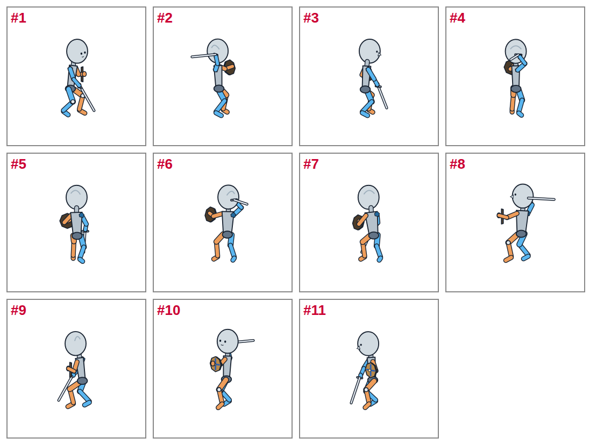
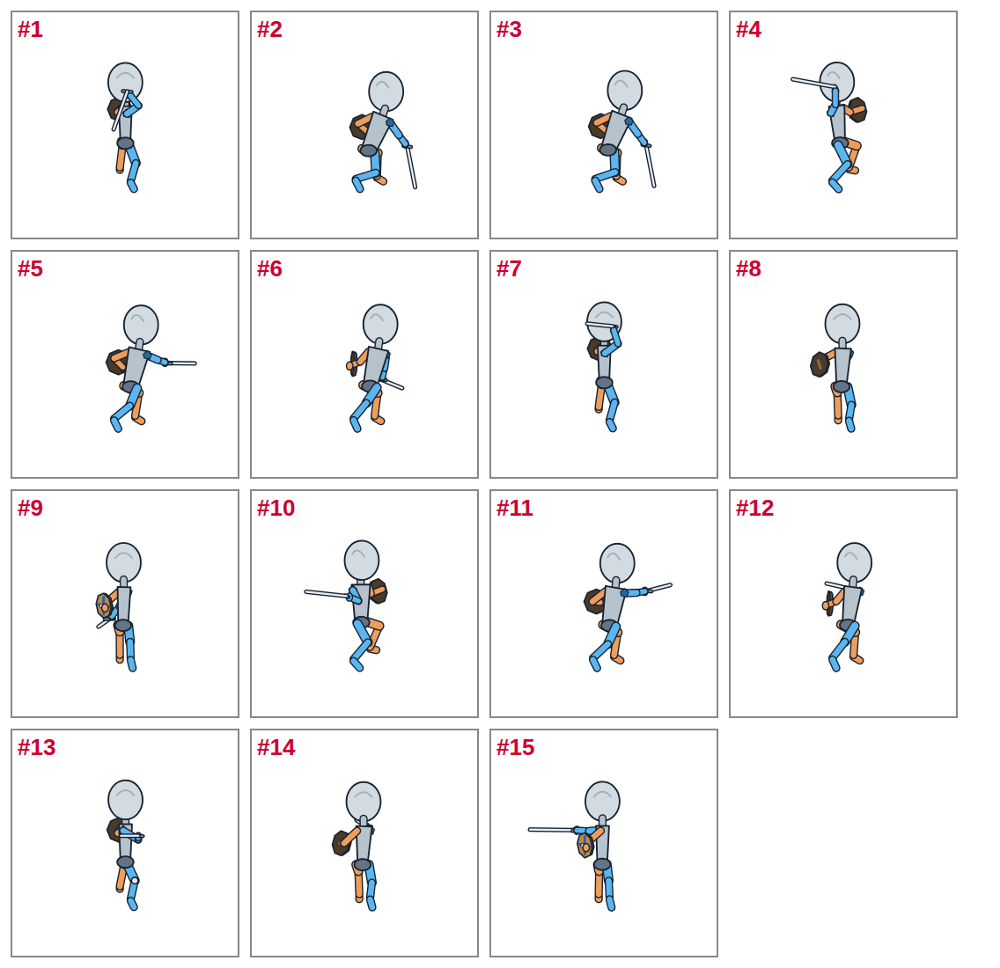
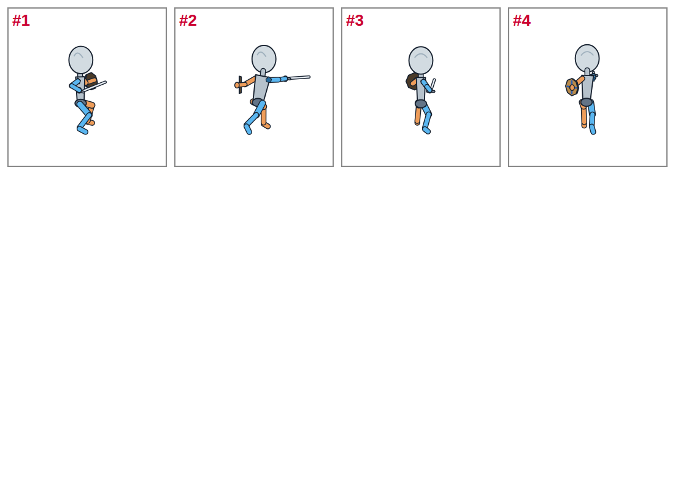
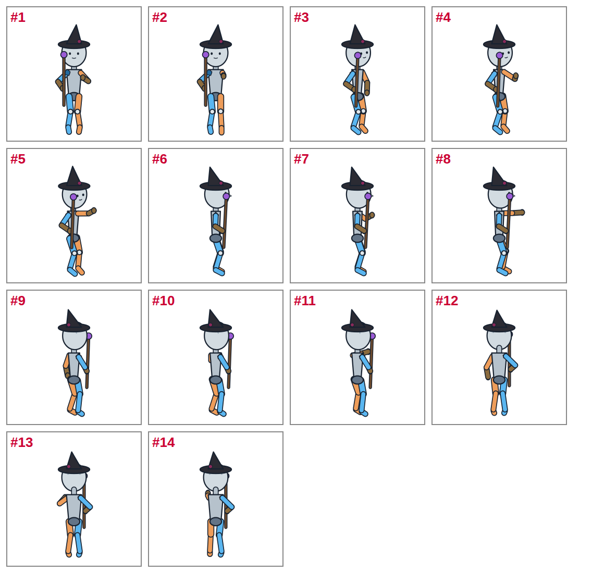
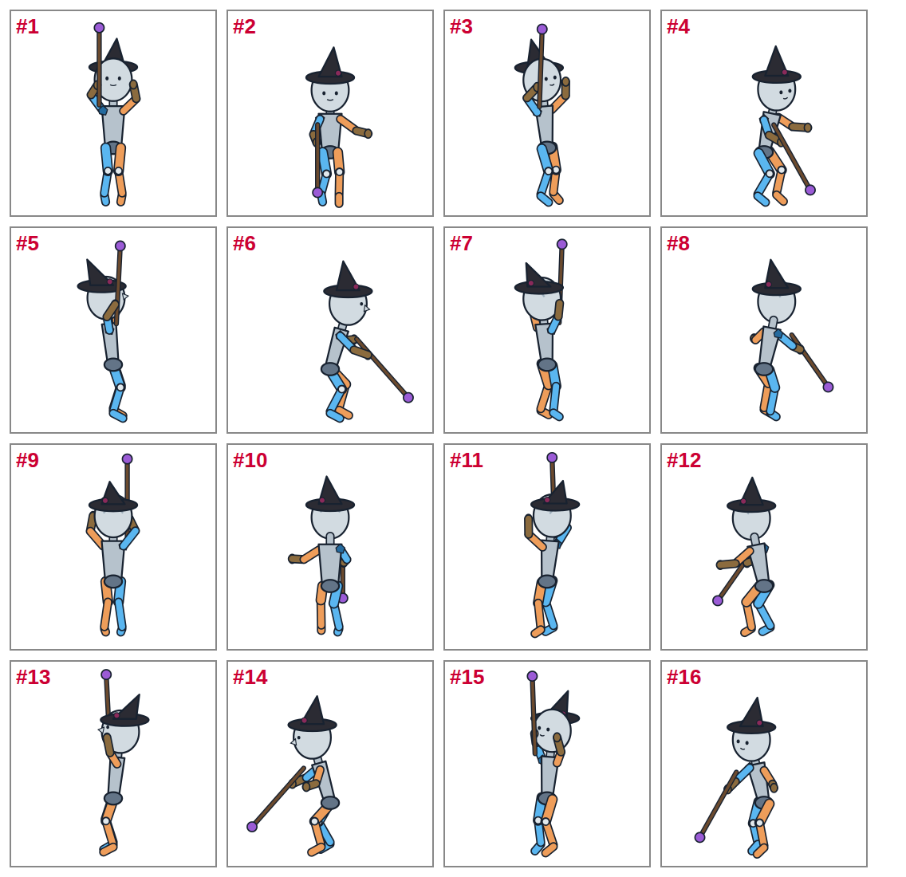
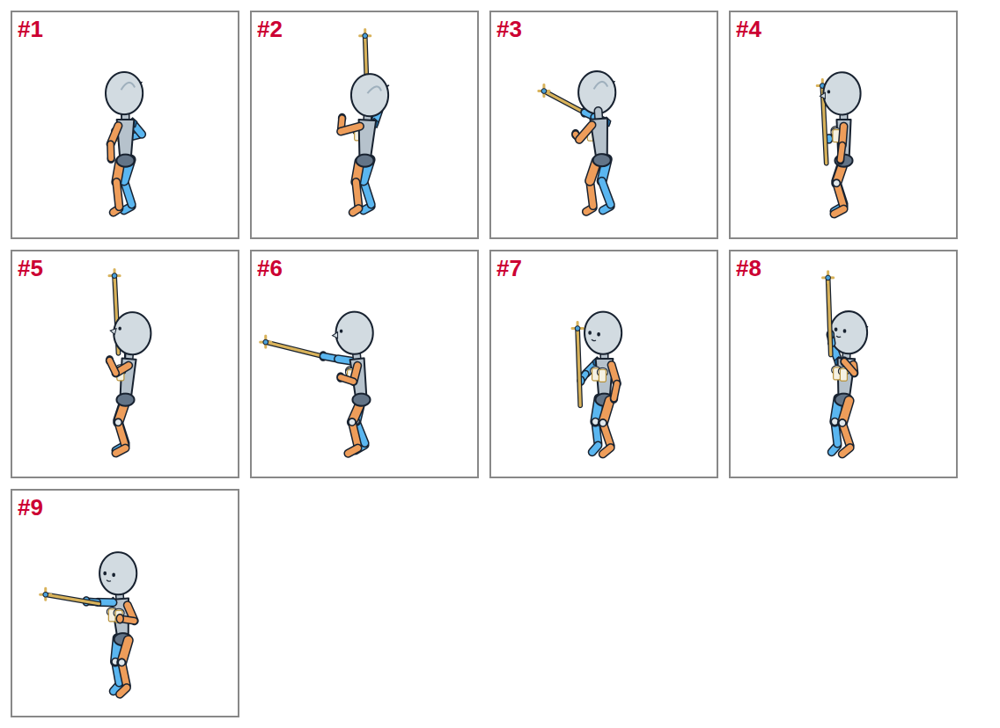

ChatGPT 1枚絵のやり直し
1回目で届いていない 137枚（届いた 192枚を除く）。
リポジトリを触れる Astra に頼むとき：「character-motion-v1/chatgpt/retry/ASTRA.md を読んで、そのとおりに作業して」と送るだけ（ASTRA.md）。
リポジトリを触れる Astra に頼むとき：「character-motion-v1/chatgpt/retry/ASTRA.md を読んで、そのとおりに作業して」と送るだけ（ASTRA.md）。
アリア（戦士） 30コマ・3回
最初に1回だけ送る文（見た目の画像を添付）
添付する画像：warrior-source.png

これから、2Dゲームのキャラクターのアニメーション用の絵を、何枚かずつまとめてお願いします。 ・添付の画像のキャラクター「アリア」を、同じ絵柄・同じ頭身（小さめのデフォルメ）・同じ衣装と色で描いてください。 ・持ち物と特徴：右手に剣、左腕に丸い盾（青い模様）。腰に剣の鞘。 ・毎回、番号つきの「ポーズ一覧」の画像を添付し、番号ごとに向きと動きを書きます。番号1つにつき1枚の別々の画像を描いてください（1枚に並べない）。 ・姿勢・向き・手足と持ち物の位置は、ポーズ一覧の図（マネキン）に合わせてください。図の色の意味：青＝キャラクター本人の右半身、橙＝左半身、灰色＝胴と頭。図の線・色・関節の丸・番号は描かないでください。 ・1枚ごとに正方形（1024×1024）。全身が入るように上下左右に1割くらいの余白をとり、立っているときの足元は、どの絵も画像の下から1割くらいの高さにそろえてください。キャラクターの大きさも、どの絵でもそろえてください。 ・背景は透明（できなければ真っ白の無地）。影・床・効果線・文字・枠は描かないでください。 ・ファイル名は、番号ごとに指定する名前にしてください。できれば全部を1つのZIPにまとめてください。 ・描いた絵を縮小・減色・切り抜きしないでください（描いたままの PNG）。 わかったら「OK」とだけ返してください。
まとめて送る文（そのポーズ一覧を添付）
1. 振りかぶったまま止まり、剣を下ろして目をそらす 11枚

ポーズ一覧を保存

やり直し：振りかぶったまま止まり、剣を下ろして目をそらす：11枚 前に描けなかったコマです。添付のポーズ一覧の番号どおりに、1枚ずつ別の画像で描いてください。決まりは最初の文のとおりです。 後ろ向き・斜め後ろ向きのコマは、キャラクターの見た目の画像の後ろ向き・斜め後ろ向きの絵を参考にしてください。顔はほとんど見えません。剣・盾・杖は図の位置に描き、体に隠れる部分は隠れたままでかまいません。 #1 → aria__swing_abandon__right__5.png 向き：真横（画面の右を向く横顔）／7コマのうち6コマ目（目をそらす） point down by her knee; she looks away #2 → aria__swing_abandon__up_right__3.png 向き：斜め後ろ（背中が見え、画面の右奥を向く）／7コマのうち4コマ目（止まる）【後ろから見た絵】 it stops there: held over her head, trembling #3 → aria__swing_abandon__up_right__5.png 向き：斜め後ろ（背中が見え、画面の右奥を向く）／7コマのうち6コマ目（目をそらす）【後ろから見た絵】 point down by her knee; she looks away #4 → aria__swing_abandon__back__3.png 向き：後ろ（背中）／7コマのうち4コマ目（止まる）【後ろから見た絵】 it stops there: held over her head, trembling #5 → aria__swing_abandon__back__5.png 向き：後ろ（背中）／7コマのうち6コマ目（目をそらす）【後ろから見た絵】 point down by her knee; she looks away #6 → aria__swing_abandon__up_left__3.png 向き：斜め後ろ（背中が見え、画面の左奥を向く）／7コマのうち4コマ目（止まる）【後ろから見た絵】 it stops there: held over her head, trembling #7 → aria__swing_abandon__up_left__5.png 向き：斜め後ろ（背中が見え、画面の左奥を向く）／7コマのうち6コマ目（目をそらす）【後ろから見た絵】 point down by her knee; she looks away #8 → aria__swing_abandon__left__3.png 向き：真横（画面の左を向く横顔）／7コマのうち4コマ目（止まる） it stops there: held over her head, trembling #9 → aria__swing_abandon__left__5.png 向き：真横（画面の左を向く横顔）／7コマのうち6コマ目（目をそらす） point down by her knee; she looks away #10 → aria__swing_abandon__down_left__3.png 向き：斜め前（体の正面が画面の左手前を向く）／7コマのうち4コマ目（止まる） it stops there: held over her head, trembling #11 → aria__swing_abandon__down_left__5.png 向き：斜め前（体の正面が画面の左手前を向く）／7コマのうち6コマ目（目をそらす） point down by her knee; she looks away
2. 通常斬り（踏み込み振り下ろし）／破城斬り（跳び上がって叩きつけ）／袈裟懸け（右上から左下への斜め斬り）／横一文字（右から左への水平斬り） 15枚

ポーズ一覧を保存

やり直し：通常斬り（踏み込み振り下ろし）／破城斬り（跳び上がって叩きつけ）／袈裟懸け（右上から左下への斜め斬り）／横一文字（右から左への水平斬り）：15枚 前に描けなかったコマです。添付のポーズ一覧の番号どおりに、1枚ずつ別の画像で描いてください。決まりは最初の文のとおりです。 後ろ向き・斜め後ろ向きのコマは、キャラクターの見た目の画像の後ろ向き・斜め後ろ向きの絵を参考にしてください。顔はほとんど見えません。剣・盾・杖は図の位置に描き、体に隠れる部分は隠れたままでかまいません。 #1 → aria__slash__back__3.png 通常斬り（踏み込み振り下ろし）／向き：後ろ（背中）／12コマのうち4コマ目（溜め）【後ろから見た絵】 cocked: wrist bent back, the blade hangs down her back; the rear foot drives her on #2 → aria__heavy__up_right__6.png 破城斬り（跳び上がって叩きつけ）／向き：斜め後ろ（背中が見え、画面の右奥を向く）／11コマのうち7コマ目（叩きつけ）【後ろから見た絵】 SLAM (hit): wrist snapped, blade driven into the floor #3 → aria__heavy__up_right__7.png 破城斬り（跳び上がって叩きつけ）／向き：斜め後ろ（背中が見え、画面の右奥を向く）／11コマのうち8コマ目（衝撃）【後ろから見た絵】 shock: holds while the floor cracks #4 → aria__kesa__up_right__3.png 袈裟懸け（右上から左下への斜め斬り）／向き：斜め後ろ（背中が見え、画面の右奥を向く）／12コマのうち4コマ目（溜め）【後ろから見た絵】 cocked: the blade hangs behind her right shoulder #5 → aria__kesa__up_right__6.png 袈裟懸け（右上から左下への斜め斬り）／向き：斜め後ろ（背中が見え、画面の右奥を向く）／12コマのうち7コマ目（命中）【後ろから見た絵】 impact: wrist snapped, arm and blade in line, cutting down to her left #6 → aria__kesa__up_right__7.png 袈裟懸け（右上から左下への斜め斬り）／向き：斜め後ろ（背中が見え、画面の右奥を向く）／12コマのうち8コマ目（振り抜き）【後ろから見た絵】 carried through to below her left hip #7 → aria__kesa__back__3.png 袈裟懸け（右上から左下への斜め斬り）／向き：後ろ（背中）／12コマのうち4コマ目（溜め）【後ろから見た絵】 cocked: the blade hangs behind her right shoulder #8 → aria__kesa__back__6.png 袈裟懸け（右上から左下への斜め斬り）／向き：後ろ（背中）／12コマのうち7コマ目（命中）【後ろから見た絵】 impact: wrist snapped, arm and blade in line, cutting down to her left #9 → aria__kesa__back__7.png 袈裟懸け（右上から左下への斜め斬り）／向き：後ろ（背中）／12コマのうち8コマ目（振り抜き）【後ろから見た絵】 carried through to below her left hip #10 → aria__yoko__up_right__3.png 横一文字（右から左への水平斬り）／向き：斜め後ろ（背中が見え、画面の右奥を向く）／12コマのうち4コマ目（溜め）【後ろから見た絵】 cocked: the blade points straight back #11 → aria__yoko__up_right__6.png 横一文字（右から左への水平斬り）／向き：斜め後ろ（背中が見え、画面の右奥を向く）／12コマのうち7コマ目（命中）【後ろから見た絵】 impact: blade level at her chest, in line with the arm #12 → aria__yoko__up_right__7.png 横一文字（右から左への水平斬り）／向き：斜め後ろ（背中が見え、画面の右奥を向く）／12コマのうち8コマ目（振り抜き）【後ろから見た絵】 carried round to her left #13 → aria__yoko__back__3.png 横一文字（右から左への水平斬り）／向き：後ろ（背中）／12コマのうち4コマ目（溜め）【後ろから見た絵】 cocked: the blade points straight back #14 → aria__yoko__back__6.png 横一文字（右から左への水平斬り）／向き：後ろ（背中）／12コマのうち7コマ目（命中）【後ろから見た絵】 impact: blade level at her chest, in line with the arm #15 → aria__yoko__back__7.png 横一文字（右から左への水平斬り）／向き：後ろ（背中）／12コマのうち8コマ目（振り抜き）【後ろから見た絵】 carried round to her left
3. 突き 4枚

ポーズ一覧を保存

やり直し：突き：4枚 前に描けなかったコマです。添付のポーズ一覧の番号どおりに、1枚ずつ別の画像で描いてください。決まりは最初の文のとおりです。 後ろ向き・斜め後ろ向きのコマは、キャラクターの見た目の画像の後ろ向き・斜め後ろ向きの絵を参考にしてください。顔はほとんど見えません。剣・盾・杖は図の位置に描き、体に隠れる部分は隠れたままでかまいません。 #1 → aria__thrust__up_right__2.png 向き：斜め後ろ（背中が見え、画面の右奥を向く）／9コマのうち3コマ目（溜め）【後ろから見た絵】 coil: weight back, lead foot lifts #2 → aria__thrust__up_right__4.png 向き：斜め後ろ（背中が見え、画面の右奥を向く）／9コマのうち5コマ目（命中）【後ろから見た絵】 full extension: arm and blade one line, rear leg straight, shield arm thrown back #3 → aria__thrust__back__2.png 向き：後ろ（背中）／9コマのうち3コマ目（溜め）【後ろから見た絵】 coil: weight back, lead foot lifts #4 → aria__thrust__back__4.png 向き：後ろ（背中）／9コマのうち5コマ目（命中）【後ろから見た絵】 full extension: arm and blade one line, rear leg straight, shield arm thrown back
魔法使い 54コマ・4回
最初に1回だけ送る文（見た目の画像を添付）
添付する画像：witch-source.png

これから、2Dゲームのキャラクターのアニメーション用の絵を、何枚かずつまとめてお願いします。 ・添付の画像のキャラクター「魔法使い」を、同じ絵柄・同じ頭身（小さめのデフォルメ）・同じ衣装と色で描いてください。 ・持ち物と特徴：右手に紫の宝珠の杖。両腕の肘から先は金属の義腕。大きなとんがり帽子。 ・毎回、番号つきの「ポーズ一覧」の画像を添付し、番号ごとに向きと動きを書きます。番号1つにつき1枚の別々の画像を描いてください（1枚に並べない）。 ・姿勢・向き・手足と持ち物の位置は、ポーズ一覧の図（マネキン）に合わせてください。図の色の意味：青＝キャラクター本人の右半身、橙＝左半身、灰色＝胴と頭。図の線・色・関節の丸・番号は描かないでください。 ・1枚ごとに正方形（1024×1024）。全身が入るように上下左右に1割くらいの余白をとり、立っているときの足元は、どの絵も画像の下から1割くらいの高さにそろえてください。キャラクターの大きさも、どの絵でもそろえてください。 ・背景は透明（できなければ真っ白の無地）。影・床・効果線・文字・枠は描かないでください。 ・ファイル名は、番号ごとに指定する名前にしてください。できれば全部を1つのZIPにまとめてください。 ・描いた絵を縮小・減色・切り抜きしないでください（描いたままの PNG）。 わかったら「OK」とだけ返してください。
まとめて送る文（そのポーズ一覧を添付）
1. 機械の腕を向けて魔力の弾を放つ 14枚

ポーズ一覧を保存

やり直し：機械の腕を向けて魔力の弾を放つ：14枚 前に描けなかったコマです。添付のポーズ一覧の番号どおりに、1枚ずつ別の画像で描いてください。決まりは最初の文のとおりです。 後ろ向き・斜め後ろ向きのコマは、キャラクターの見た目の画像の後ろ向き・斜め後ろ向きの絵を参考にしてください。顔はほとんど見えません。剣・盾・杖は図の位置に描き、体に隠れる部分は隠れたままでかまいません。 #1 → mage__mage_bolt__front__3.png 向き：正面（こちらを向く）／12コマのうち4コマ目（集める） the mechanical left arm comes up bent, gathering #2 → mage__mage_bolt__front__5.png 向き：正面（こちらを向く）／12コマのうち6コマ目（狙う） the arm straight at the target #3 → mage__mage_bolt__down_right__0.png 向き：斜め前（体の正面が画面の右手前を向く）／12コマのうち1コマ目（立つ） the staff upright in the right hand #4 → mage__mage_bolt__down_right__3.png 向き：斜め前（体の正面が画面の右手前を向く）／12コマのうち4コマ目（集める） the mechanical left arm comes up bent, gathering #5 → mage__mage_bolt__down_right__6.png 向き：斜め前（体の正面が画面の右手前を向く）／12コマのうち7コマ目（放つ） the shot: the arm kicks up #6 → mage__mage_bolt__right__0.png 向き：真横（画面の右を向く横顔）／12コマのうち1コマ目（立つ） the staff upright in the right hand #7 → mage__mage_bolt__right__3.png 向き：真横（画面の右を向く横顔）／12コマのうち4コマ目（集める） the mechanical left arm comes up bent, gathering #8 → mage__mage_bolt__right__5.png 向き：真横（画面の右を向く横顔）／12コマのうち6コマ目（狙う） the arm straight at the target #9 → mage__mage_bolt__up_right__0.png 向き：斜め後ろ（背中が見え、画面の右奥を向く）／12コマのうち1コマ目（立つ）【後ろから見た絵】 the staff upright in the right hand #10 → mage__mage_bolt__up_right__3.png 向き：斜め後ろ（背中が見え、画面の右奥を向く）／12コマのうち4コマ目（集める）【後ろから見た絵】 the mechanical left arm comes up bent, gathering #11 → mage__mage_bolt__up_right__5.png 向き：斜め後ろ（背中が見え、画面の右奥を向く）／12コマのうち6コマ目（狙う）【後ろから見た絵】 the arm straight at the target #12 → mage__mage_bolt__back__0.png 向き：後ろ（背中）／12コマのうち1コマ目（立つ）【後ろから見た絵】 the staff upright in the right hand #13 → mage__mage_bolt__back__3.png 向き：後ろ（背中）／12コマのうち4コマ目（集める）【後ろから見た絵】 the mechanical left arm comes up bent, gathering #14 → mage__mage_bolt__back__5.png 向き：後ろ（背中）／12コマのうち6コマ目（狙う）【後ろから見た絵】 the arm straight at the target
2. 機械の腕を向けて魔力の弾を放つ 9枚

ポーズ一覧を保存
やり直し：機械の腕を向けて魔力の弾を放つ：9枚 前に描けなかったコマです。添付のポーズ一覧の番号どおりに、1枚ずつ別の画像で描いてください。決まりは最初の文のとおりです。 後ろ向き・斜め後ろ向きのコマは、キャラクターの見た目の画像の後ろ向き・斜め後ろ向きの絵を参考にしてください。顔はほとんど見えません。剣・盾・杖は図の位置に描き、体に隠れる部分は隠れたままでかまいません。 #1 → mage__mage_bolt__up_left__0.png 向き：斜め後ろ（背中が見え、画面の左奥を向く）／12コマのうち1コマ目（立つ）【後ろから見た絵】 the staff upright in the right hand #2 → mage__mage_bolt__up_left__3.png 向き：斜め後ろ（背中が見え、画面の左奥を向く）／12コマのうち4コマ目（集める）【後ろから見た絵】 the mechanical left arm comes up bent, gathering #3 → mage__mage_bolt__up_left__5.png 向き：斜め後ろ（背中が見え、画面の左奥を向く）／12コマのうち6コマ目（狙う）【後ろから見た絵】 the arm straight at the target #4 → mage__mage_bolt__left__0.png 向き：真横（画面の左を向く横顔）／12コマのうち1コマ目（立つ） the staff upright in the right hand #5 → mage__mage_bolt__left__3.png 向き：真横（画面の左を向く横顔）／12コマのうち4コマ目（集める） the mechanical left arm comes up bent, gathering #6 → mage__mage_bolt__left__5.png 向き：真横（画面の左を向く横顔）／12コマのうち6コマ目（狙う） the arm straight at the target #7 → mage__mage_bolt__down_left__0.png 向き：斜め前（体の正面が画面の左手前を向く）／12コマのうち1コマ目（立つ） the staff upright in the right hand #8 → mage__mage_bolt__down_left__3.png 向き：斜め前（体の正面が画面の左手前を向く）／12コマのうち4コマ目（集める） the mechanical left arm comes up bent, gathering #9 → mage__mage_bolt__down_left__5.png 向き：斜め前（体の正面が画面の左手前を向く）／12コマのうち6コマ目（狙う） the arm straight at the target
3. 杖と腕を掲げて溜め、振り下ろして範囲魔法 16枚

ポーズ一覧を保存

やり直し：杖と腕を掲げて溜め、振り下ろして範囲魔法：16枚 前に描けなかったコマです。添付のポーズ一覧の番号どおりに、1枚ずつ別の画像で描いてください。決まりは最初の文のとおりです。 後ろ向き・斜め後ろ向きのコマは、キャラクターの見た目の画像の後ろ向き・斜め後ろ向きの絵を参考にしてください。顔はほとんど見えません。剣・盾・杖は図の位置に描き、体に隠れる部分は隠れたままでかまいません。 #1 → mage__mage_area__front__5.png 向き：正面（こちらを向く）／18コマのうち6コマ目（掲げる） the staff and the left arm raised high #2 → mage__mage_area__front__13.png 向き：正面（こちらを向く）／18コマのうち14コマ目（振り下ろす） the staff comes down to the floor ahead, the arm sweeps out #3 → mage__mage_area__down_right__5.png 向き：斜め前（体の正面が画面の右手前を向く）／18コマのうち6コマ目（掲げる） the staff and the left arm raised high #4 → mage__mage_area__down_right__13.png 向き：斜め前（体の正面が画面の右手前を向く）／18コマのうち14コマ目（振り下ろす） the staff comes down to the floor ahead, the arm sweeps out #5 → mage__mage_area__right__5.png 向き：真横（画面の右を向く横顔）／18コマのうち6コマ目（掲げる） the staff and the left arm raised high #6 → mage__mage_area__right__13.png 向き：真横（画面の右を向く横顔）／18コマのうち14コマ目（振り下ろす） the staff comes down to the floor ahead, the arm sweeps out #7 → mage__mage_area__up_right__5.png 向き：斜め後ろ（背中が見え、画面の右奥を向く）／18コマのうち6コマ目（掲げる）【後ろから見た絵】 the staff and the left arm raised high #8 → mage__mage_area__up_right__13.png 向き：斜め後ろ（背中が見え、画面の右奥を向く）／18コマのうち14コマ目（振り下ろす）【後ろから見た絵】 the staff comes down to the floor ahead, the arm sweeps out #9 → mage__mage_area__back__5.png 向き：後ろ（背中）／18コマのうち6コマ目（掲げる）【後ろから見た絵】 the staff and the left arm raised high #10 → mage__mage_area__back__13.png 向き：後ろ（背中）／18コマのうち14コマ目（振り下ろす）【後ろから見た絵】 the staff comes down to the floor ahead, the arm sweeps out #11 → mage__mage_area__up_left__5.png 向き：斜め後ろ（背中が見え、画面の左奥を向く）／18コマのうち6コマ目（掲げる）【後ろから見た絵】 the staff and the left arm raised high #12 → mage__mage_area__up_left__13.png 向き：斜め後ろ（背中が見え、画面の左奥を向く）／18コマのうち14コマ目（振り下ろす）【後ろから見た絵】 the staff comes down to the floor ahead, the arm sweeps out #13 → mage__mage_area__left__5.png 向き：真横（画面の左を向く横顔）／18コマのうち6コマ目（掲げる） the staff and the left arm raised high #14 → mage__mage_area__left__13.png 向き：真横（画面の左を向く横顔）／18コマのうち14コマ目（振り下ろす） the staff comes down to the floor ahead, the arm sweeps out #15 → mage__mage_area__down_left__5.png 向き：斜め前（体の正面が画面の左手前を向く）／18コマのうち6コマ目（掲げる） the staff and the left arm raised high #16 → mage__mage_area__down_left__13.png 向き：斜め前（体の正面が画面の左手前を向く）／18コマのうち14コマ目（振り下ろす） the staff comes down to the floor ahead, the arm sweeps out
4. 腕を向けたまま魔力を流し続ける／義腕の手のひらを向けて障壁を張る／撃ちすぎて熱をもった義腕を振って冷ます／帽子のつばを引き下げて顔を隠す（照れ・気まずさ）／片膝から杖を支えに立ち上がり、何事もなかった顔をする 15枚

ポーズ一覧を保存
やり直し：腕を向けたまま魔力を流し続ける／義腕の手のひらを向けて障壁を張る／撃ちすぎて熱をもった義腕を振って冷ます／帽子のつばを引き下げて顔を隠す（照れ・気まずさ）／片膝から杖を支えに立ち上がり、何事もなかった顔をする：15枚 前に描けなかったコマです。添付のポーズ一覧の番号どおりに、1枚ずつ別の画像で描いてください。決まりは最初の文のとおりです。 後ろ向き・斜め後ろ向きのコマは、キャラクターの見た目の画像の後ろ向き・斜め後ろ向きの絵を参考にしてください。顔はほとんど見えません。剣・盾・杖は図の位置に描き、体に隠れる部分は隠れたままでかまいません。 #1 → mage__mage_channel__right__0.png 腕を向けたまま魔力を流し続ける／向き：真横（画面の右を向く横顔）／8コマのうち1コマ目 the arm held out, a slight tremble as the power runs through it; the coat stirs #2 → mage__mage_channel__right__3.png 腕を向けたまま魔力を流し続ける／向き：真横（画面の右を向く横顔）／8コマのうち4コマ目 the arm held out, a slight tremble as the power runs through it; the coat stirs #3 → mage__mage_barrier__front__4.png 義腕の手のひらを向けて障壁を張る／向き：正面（こちらを向く）／10コマのうち5コマ目（かざす） the mechanical palm comes up toward the threat #4 → mage__mage_barrier__down_right__4.png 義腕の手のひらを向けて障壁を張る／向き：斜め前（体の正面が画面の右手前を向く）／10コマのうち5コマ目（かざす） the mechanical palm comes up toward the threat #5 → mage__mage_barrier__right__4.png 義腕の手のひらを向けて障壁を張る／向き：真横（画面の右を向く横顔）／10コマのうち5コマ目（かざす） the mechanical palm comes up toward the threat #6 → mage__mage_barrier__up_right__4.png 義腕の手のひらを向けて障壁を張る／向き：斜め後ろ（背中が見え、画面の右奥を向く）／10コマのうち5コマ目（かざす）【後ろから見た絵】 the mechanical palm comes up toward the threat #7 → mage__mage_barrier__back__4.png 義腕の手のひらを向けて障壁を張る／向き：後ろ（背中）／10コマのうち5コマ目（かざす）【後ろから見た絵】 the mechanical palm comes up toward the threat #8 → mage__mage_barrier__up_left__4.png 義腕の手のひらを向けて障壁を張る／向き：斜め後ろ（背中が見え、画面の左奥を向く）／10コマのうち5コマ目（かざす）【後ろから見た絵】 the mechanical palm comes up toward the threat #9 → mage__mage_barrier__left__4.png 義腕の手のひらを向けて障壁を張る／向き：真横（画面の左を向く横顔）／10コマのうち5コマ目（かざす） the mechanical palm comes up toward the threat #10 → mage__mage_barrier__down_left__4.png 義腕の手のひらを向けて障壁を張る／向き：斜め前（体の正面が画面の左手前を向く）／10コマのうち5コマ目（かざす） the mechanical palm comes up toward the threat #11 → mage__mage_overheat__front__0.png 撃ちすぎて熱をもった義腕を振って冷ます／向き：正面（こちらを向く）／12コマのうち1コマ目（見る） looks at the hot arm, steam venting from it #12 → mage__mage_overheat__front__2.png 撃ちすぎて熱をもった義腕を振って冷ます／向き：正面（こちらを向く）／12コマのうち3コマ目（振る） shakes it out to the side #13 → mage__mage_hat_tug__down_right__5.png 帽子のつばを引き下げて顔を隠す（照れ・気まずさ）／向き：斜め前（体の正面が画面の右手前を向く）／12コマのうち6コマ目（つば） the mechanical hand goes up to the brim #14 → mage__mage_recover__front__3.png 片膝から杖を支えに立ち上がり、何事もなかった顔をする／向き：正面（こちらを向く）／14コマのうち4コマ目（立ち上がる） pushes up on the staff #15 → mage__mage_recover__front__8.png 片膝から杖を支えに立ち上がり、何事もなかった顔をする／向き：正面（こちらを向く）／14コマのうち9コマ目（整える） straightens the hat
ヒーラー 53コマ・5回
最初に1回だけ送る文（見た目の画像を添付）
添付する画像：healer-source-v8.png

これから、2Dゲームのキャラクターのアニメーション用の絵を、何枚かずつまとめてお願いします。 ・添付の画像のキャラクター「ヒーラー」を、同じ絵柄・同じ頭身（小さめのデフォルメ）・同じ衣装と色で描いてください。 ・持ち物と特徴：右手に金の十字の杖（輪の中に青い宝珠）。エルフの長い耳。長い黒髪（頭に編み込み）で、いつも目を閉じている。白と金の衣装で、胸の前に細い前垂れが2枚下がり、腰から下は長い前垂れと裾。白い長手袋・白い長靴下・白いブーツ。 ・毎回、番号つきの「ポーズ一覧」の画像を添付し、番号ごとに向きと動きを書きます。番号1つにつき1枚の別々の画像を描いてください（1枚に並べない）。 ・姿勢・向き・手足と持ち物の位置は、ポーズ一覧の図（マネキン）に合わせてください。図の色の意味：青＝キャラクター本人の右半身、橙＝左半身、灰色＝胴と頭。図の線・色・関節の丸・番号は描かないでください。 ・1枚ごとに正方形（1024×1024）。全身が入るように上下左右に1割くらいの余白をとり、立っているときの足元は、どの絵も画像の下から1割くらいの高さにそろえてください。キャラクターの大きさも、どの絵でもそろえてください。 ・背景は透明（できなければ真っ白の無地）。影・床・効果線・文字・枠は描かないでください。 ・ファイル名は、番号ごとに指定する名前にしてください。できれば全部を1つのZIPにまとめてください。 ・描いた絵を縮小・減色・切り抜きしないでください（描いたままの PNG）。 わかったら「OK」とだけ返してください。
まとめて送る文（そのポーズ一覧を添付）
1. 杖を掲げてから仲間へ向け、加護を与える 15枚

ポーズ一覧を保存
やり直し：杖を掲げてから仲間へ向け、加護を与える：15枚 前に描けなかったコマです。添付のポーズ一覧の番号どおりに、1枚ずつ別の画像で描いてください。決まりは最初の文のとおりです。 後ろ向き・斜め後ろ向きのコマは、キャラクターの見た目の画像の後ろ向き・斜め後ろ向きの絵を参考にしてください。顔はほとんど見えません。剣・盾・杖は図の位置に描き、体に隠れる部分は隠れたままでかまいません。 #1 → healer__healer_buff__front__0.png 向き：正面（こちらを向く）／12コマのうち1コマ目（立つ） #2 → healer__healer_buff__front__4.png 向き：正面（こちらを向く）／12コマのうち5コマ目（掲げる） the staff raised high #3 → healer__healer_buff__front__8.png 向き：正面（こちらを向く）／12コマのうち9コマ目（授ける） the staff pointed at the one she blesses #4 → healer__healer_buff__down_right__0.png 向き：斜め前（体の正面が画面の右手前を向く）／12コマのうち1コマ目（立つ） #5 → healer__healer_buff__down_right__4.png 向き：斜め前（体の正面が画面の右手前を向く）／12コマのうち5コマ目（掲げる） the staff raised high #6 → healer__healer_buff__down_right__8.png 向き：斜め前（体の正面が画面の右手前を向く）／12コマのうち9コマ目（授ける） the staff pointed at the one she blesses #7 → healer__healer_buff__right__0.png 向き：真横（画面の右を向く横顔）／12コマのうち1コマ目（立つ） #8 → healer__healer_buff__right__4.png 向き：真横（画面の右を向く横顔）／12コマのうち5コマ目（掲げる） the staff raised high #9 → healer__healer_buff__right__8.png 向き：真横（画面の右を向く横顔）／12コマのうち9コマ目（授ける） the staff pointed at the one she blesses #10 → healer__healer_buff__up_right__0.png 向き：斜め後ろ（背中が見え、画面の右奥を向く）／12コマのうち1コマ目（立つ）【後ろから見た絵】 #11 → healer__healer_buff__up_right__4.png 向き：斜め後ろ（背中が見え、画面の右奥を向く）／12コマのうち5コマ目（掲げる）【後ろから見た絵】 the staff raised high #12 → healer__healer_buff__up_right__8.png 向き：斜め後ろ（背中が見え、画面の右奥を向く）／12コマのうち9コマ目（授ける）【後ろから見た絵】 the staff pointed at the one she blesses #13 → healer__healer_buff__back__0.png 向き：後ろ（背中）／12コマのうち1コマ目（立つ）【後ろから見た絵】 #14 → healer__healer_buff__back__4.png 向き：後ろ（背中）／12コマのうち5コマ目（掲げる）【後ろから見た絵】 the staff raised high #15 → healer__healer_buff__back__8.png 向き：後ろ（背中）／12コマのうち9コマ目（授ける）【後ろから見た絵】 the staff pointed at the one she blesses
2. 杖を掲げてから仲間へ向け、加護を与える 9枚

ポーズ一覧を保存

やり直し：杖を掲げてから仲間へ向け、加護を与える：9枚 前に描けなかったコマです。添付のポーズ一覧の番号どおりに、1枚ずつ別の画像で描いてください。決まりは最初の文のとおりです。 後ろ向き・斜め後ろ向きのコマは、キャラクターの見た目の画像の後ろ向き・斜め後ろ向きの絵を参考にしてください。顔はほとんど見えません。剣・盾・杖は図の位置に描き、体に隠れる部分は隠れたままでかまいません。 #1 → healer__healer_buff__up_left__0.png 向き：斜め後ろ（背中が見え、画面の左奥を向く）／12コマのうち1コマ目（立つ）【後ろから見た絵】 #2 → healer__healer_buff__up_left__4.png 向き：斜め後ろ（背中が見え、画面の左奥を向く）／12コマのうち5コマ目（掲げる）【後ろから見た絵】 the staff raised high #3 → healer__healer_buff__up_left__8.png 向き：斜め後ろ（背中が見え、画面の左奥を向く）／12コマのうち9コマ目（授ける）【後ろから見た絵】 the staff pointed at the one she blesses #4 → healer__healer_buff__left__0.png 向き：真横（画面の左を向く横顔）／12コマのうち1コマ目（立つ） #5 → healer__healer_buff__left__4.png 向き：真横（画面の左を向く横顔）／12コマのうち5コマ目（掲げる） the staff raised high #6 → healer__healer_buff__left__8.png 向き：真横（画面の左を向く横顔）／12コマのうち9コマ目（授ける） the staff pointed at the one she blesses #7 → healer__healer_buff__down_left__0.png 向き：斜め前（体の正面が画面の左手前を向く）／12コマのうち1コマ目（立つ） #8 → healer__healer_buff__down_left__4.png 向き：斜め前（体の正面が画面の左手前を向く）／12コマのうち5コマ目（掲げる） the staff raised high #9 → healer__healer_buff__down_left__8.png 向き：斜め前（体の正面が画面の左手前を向く）／12コマのうち9コマ目（授ける） the staff pointed at the one she blesses
3. 杖で床を突き、清めの光を広げる 15枚

ポーズ一覧を保存
やり直し：杖で床を突き、清めの光を広げる：15枚 前に描けなかったコマです。添付のポーズ一覧の番号どおりに、1枚ずつ別の画像で描いてください。決まりは最初の文のとおりです。 後ろ向き・斜め後ろ向きのコマは、キャラクターの見た目の画像の後ろ向き・斜め後ろ向きの絵を参考にしてください。顔はほとんど見えません。剣・盾・杖は図の位置に描き、体に隠れる部分は隠れたままでかまいません。 #1 → healer__healer_purify__front__3.png 向き：正面（こちらを向く）／13コマのうち4コマ目（持ち上げる） lifts the staff a little #2 → healer__healer_purify__front__9.png 向き：正面（こちらを向く）／13コマのうち10コマ目（祈る） holds it there, praying #3 → healer__healer_purify__down_right__3.png 向き：斜め前（体の正面が画面の右手前を向く）／13コマのうち4コマ目（持ち上げる） lifts the staff a little #4 → healer__healer_purify__down_right__6.png 向き：斜め前（体の正面が画面の右手前を向く）／13コマのうち7コマ目（突く） drives its foot to the floor: the light spreads #5 → healer__healer_purify__down_right__9.png 向き：斜め前（体の正面が画面の右手前を向く）／13コマのうち10コマ目（祈る） holds it there, praying #6 → healer__healer_purify__right__3.png 向き：真横（画面の右を向く横顔）／13コマのうち4コマ目（持ち上げる） lifts the staff a little #7 → healer__healer_purify__right__6.png 向き：真横（画面の右を向く横顔）／13コマのうち7コマ目（突く） drives its foot to the floor: the light spreads #8 → healer__healer_purify__right__9.png 向き：真横（画面の右を向く横顔）／13コマのうち10コマ目（祈る） holds it there, praying #9 → healer__healer_purify__up_right__3.png 向き：斜め後ろ（背中が見え、画面の右奥を向く）／13コマのうち4コマ目（持ち上げる）【後ろから見た絵】 lifts the staff a little #10 → healer__healer_purify__up_right__9.png 向き：斜め後ろ（背中が見え、画面の右奥を向く）／13コマのうち10コマ目（祈る）【後ろから見た絵】 holds it there, praying #11 → healer__healer_purify__back__3.png 向き：後ろ（背中）／13コマのうち4コマ目（持ち上げる）【後ろから見た絵】 lifts the staff a little #12 → healer__healer_purify__back__9.png 向き：後ろ（背中）／13コマのうち10コマ目（祈る）【後ろから見た絵】 holds it there, praying #13 → healer__healer_purify__up_left__3.png 向き：斜め後ろ（背中が見え、画面の左奥を向く）／13コマのうち4コマ目（持ち上げる）【後ろから見た絵】 lifts the staff a little #14 → healer__healer_purify__up_left__6.png 向き：斜め後ろ（背中が見え、画面の左奥を向く）／13コマのうち7コマ目（突く）【後ろから見た絵】 drives its foot to the floor: the light spreads #15 → healer__healer_purify__up_left__9.png 向き：斜め後ろ（背中が見え、画面の左奥を向く）／13コマのうち10コマ目（祈る）【後ろから見た絵】 holds it there, praying
4. 杖で床を突き、清めの光を広げる 6枚

ポーズ一覧を保存
やり直し：杖で床を突き、清めの光を広げる：6枚 前に描けなかったコマです。添付のポーズ一覧の番号どおりに、1枚ずつ別の画像で描いてください。決まりは最初の文のとおりです。 #1 → healer__healer_purify__left__3.png 向き：真横（画面の左を向く横顔）／13コマのうち4コマ目（持ち上げる） lifts the staff a little #2 → healer__healer_purify__left__6.png 向き：真横（画面の左を向く横顔）／13コマのうち7コマ目（突く） drives its foot to the floor: the light spreads #3 → healer__healer_purify__left__9.png 向き：真横（画面の左を向く横顔）／13コマのうち10コマ目（祈る） holds it there, praying #4 → healer__healer_purify__down_left__3.png 向き：斜め前（体の正面が画面の左手前を向く）／13コマのうち4コマ目（持ち上げる） lifts the staff a little #5 → healer__healer_purify__down_left__6.png 向き：斜め前（体の正面が画面の左手前を向く）／13コマのうち7コマ目（突く） drives its foot to the floor: the light spreads #6 → healer__healer_purify__down_left__9.png 向き：斜め前（体の正面が画面の左手前を向く）／13コマのうち10コマ目（祈る） holds it there, praying
5. 杖を立てて祈り、癒やす／嫌なものから顔を背け、胸をかばって杖で遮る／前垂れを押さえて胸を隠しながら立つ／倒れた仲間のそばに膝をつき、杖を立てて片手をかざして癒やす／胸を押さえながら走る（揺れを抑えようとする）／人目を避けてひざまずき、ひそかに別の神へ祈る 8枚

ポーズ一覧を保存
やり直し：杖を立てて祈り、癒やす／嫌なものから顔を背け、胸をかばって杖で遮る／前垂れを押さえて胸を隠しながら立つ／倒れた仲間のそばに膝をつき、杖を立てて片手をかざして癒やす／胸を押さえながら走る（揺れを抑えようとする）／人目を避けてひざまずき、ひそかに別の神へ祈る：8枚 前に描けなかったコマです。添付のポーズ一覧の番号どおりに、1枚ずつ別の画像で描いてください。決まりは最初の文のとおりです。 後ろ向き・斜め後ろ向きのコマは、キャラクターの見た目の画像の後ろ向き・斜め後ろ向きの絵を参考にしてください。顔はほとんど見えません。剣・盾・杖は図の位置に描き、体に隠れる部分は隠れたままでかまいません。 #1 → healer__healer_pray__front__0.png 杖を立てて祈り、癒やす／向き：正面（こちらを向く）／8コマのうち1コマ目 the staff upright, the other hand at her breast, head bowed, eyes closed, breathing slowly #2 → healer__healer_disgust__front__4.png 嫌なものから顔を背け、胸をかばって杖で遮る／向き：正面（こちらを向く）／9コマのうち5コマ目（拒む） recoils: turns her face away, an arm across her chest, the staff held across as a bar #3 → healer__healer_disgust__front__8.png 嫌なものから顔を背け、胸をかばって杖で遮る／向き：正面（こちらを向く）／9コマのうち9コマ目（構え直す） straightens, still covering herself #4 → healer__healer_cover__front__0.png 前垂れを押さえて胸を隠しながら立つ／向き：正面（こちらを向く）／8コマのうち1コマ目 an arm across her chest holding the front panels down; as she sways they would lift #5 → healer__healer_kneel_heal__down_right__0.png 倒れた仲間のそばに膝をつき、杖を立てて片手をかざして癒やす／向き：斜め前（体の正面が画面の右手前を向く）／8コマのうち1コマ目 kneeling, the staff upright in her right hand, the left hand held out low over the one she heals, eyes closed #6 → healer__healer_run_cover__right__0.png 胸を押さえながら走る（揺れを抑えようとする）／向き：真横（画面の右を向く横顔）／8コマのうち1コマ目 running, one arm clamped across her chest against the bounce, the staff held tilted up in the other hand #7 → healer__healer_run_cover__right__4.png 胸を押さえながら走る（揺れを抑えようとする）／向き：真横（画面の右を向く横顔）／8コマのうち5コマ目 running, one arm clamped across her chest against the bounce, the staff held tilted up in the other hand #8 → healer__healer_dark_prayer__up_right__5.png 人目を避けてひざまずき、ひそかに別の神へ祈る／向き：斜め後ろ（背中が見え、画面の右奥を向く）／13コマのうち6コマ目（祈る）【後ろから見た絵】 kneels, the staff held against her, the hands clasped the other way round, head low, eyes open